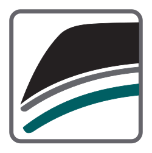

Save Metrolink
Links to help speak out against OCTA funding cuts to Metrolink
Links to Toolkits
Take Action
OCTA Toolkit
Metro Toolkit
Canvassing Script
Email Template
Articles & Further Information
Don’t Let OCTA De-Rail Our Future, How Metrolink Cuts Will Cost Us All
Metrolink is Facing Service Cuts - Take Action Now!